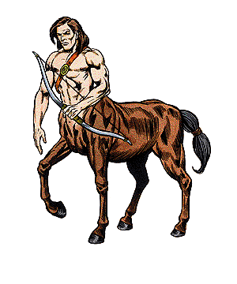

Centaur

CLIMATE/TERRAIN:
| Temperate forest
|
FREQUENCY:
| Rare
|
ORGANIZATION:
| Tribal
|
ACTIVITY CYCLE:
| Day
|
DIET:
| Omnivorous
|
INTELLIGENCE:
| Low to average (5-10)
|
TREASURE:
| M, Q (D, I, T)
|
ALIGNMENT:
| Neutral or chaotic good
|
NO. APPEARING:
| 1-8
|
ARMOR CLASS:
| 5 (4)
|
MOVEMENT:
| 18
|
HIT DICE:
| 4
|
THAC0:
| 17
|
NO. OF ATTACKS:
| 3
|
DAMAGE/ATTACK:
| 1-6/1-6 and weapon
|
SPECIAL ATTACKS:
| Nil
|
SPECIAL DEFENSES:
| Nil
|
MAGIC RESISTANCE:
| Nil
|
SIZE:
| L(8'-9' tall)
|
MORALE:
| Elite (13-14)
|
XP VALUE:
| 175
|
Centaur leader
| 270
|
Centaur priest
| 420
|
Centaurs are woodland beings who shun the company of men. They dwell in
remote, secluded glades and pastures.
The appearance of a centaur is unmistakable: they have the upper torso, arms,
and head of a human being and the lower body of a large, powerful horse.
Centaurs speak their own language and some among them (about 10%) can converse
in the tongue of elves.
Combat: A band of centaurs is always armed, and the leaders carry shields. Half of the
centaurs will be wielding oaken clubs (the equivalent of morning stars), one
quarter will carry composite bows and have 10-30 arrows (either flight or sheaf,
depending on the current state of affairs in the area). The remainder of the
band will be leaders (AC4; HD5) using medium shields and medium horse lances.
Centaurs make 3 attacks each round in melee: once with their weapons and twice
with their hooves.
Habitat/Society: Centaurs are sociable creatures, taking great pleasure in the society of
others of their kind. Their overall organization is tribal, with a tribe divided
into family groups living together in harmony. The size of the tribe varies, it
range from 3-4 families to upwards of 20 families. Since males have the dangerous
roles of hunter and protector, females outnumber males by two to one. The
centaur mates for life, and the entire tribe participates in the education of the
young.
The lair is located deep within a forest, and consists of a large, hidden
glade and pasture with a good supply of running water. Depending upon the climate,
the lair may contain huts or lean-tos to shelter the individual families.
Centaurs are skilled in horticulture, and have been known to cultivate useful plants
in the vicinity of their lair. In dangerous, monster infested areas, centaurs
will sometimes plant a thick barrier of tough thorn bushes around their lair
and even set traps and snares. In the open area, away from the trees, are hearths
for cooking and warmth. If encountered in their lair, there will be 1-6
additional males, females equal to twice the number of males, and 5-30 young. The
females (3 Hit Dice) and the young (1-3 Hit Dice) will fight only with their
hooves, and only in a life or death situation.
Each tribe will have a priest who is treated as a leader but has the spell
abilities of a 3rd level druid.
Centaurs survive through a mixture of hunting, foraging, fishing, agriculture
and trade. Though they shun dealings with humans, centaurs have been known to
trade with elves, especially for food and wine. The elves are paid from the
group treasury, which comes from the booty of slain monsters.
The territory of a centaur tribe varies with its size and the nature of the
area it inhabits. Centaurs are also not above sharing a territory with elves. The
attitude of a centaur toward a stranger in its territory will vary with the
visitor. Humans and dwarves will usually be asked to leave in a polite manner,
while halflings or gnomes will be tolerated, and elves will be welcomed. Monsters
will be dealt with in a manner according to the threat they represent to the
welfare and survival of the tribe. Were a giant or dragon to enter the
territory, the centaurs would pull up stakes and relocate, while trolls and orcs and
their like will be killed.
Centaurs will take the treasure of their fallen foes, and are fully aware of
its value. Most male centaurs have a small coin supply, while the tribe has a
treasury which may well include some magical items. Leaders will have twice the
normal individual treasure. This treasure is used to buy food for the group, or
to ransom (90% likely) captured or threatened members of the tribe.
While basically neutral or chaotic good, centaurs have been known to become
rowdy, boorish, and aggressive when under the influence of alcohol. They are also
extremely protective of their females and young. Centaurs are basically
pastoral, but will react with violence if their lifestyle and survival is threatened.
Ecology: The centaur lives in close harmony with nature and spends its lifetime
carefully conserving the natural resources around its lair. The race seems to have an
innate knowledge of how to achieve this precious balance. If forced to chop
down a tree, a centaur will plant another to replace it. Centaurs never over hunt
or over fish an area as a human group might do, but choose their game with
care, limiting the amount they eat.
Index